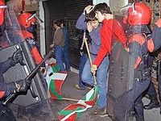

Borroka
 De: La Frikipedia, la enciclopedia extremadamente seria.
De: La Frikipedia, la enciclopedia extremadamente seria.
| De la serie tribus urbanas del mundo:
|
| Borroka
|
Ejemplo de la tribu

|
| Joven con greñas, envuelto en un palestino y camuflado en rayas y parches
|
|
| Hábitat
|
En cualquier ciudad vasca (Hernani sobre todo)
|
| Inteligencia
|
Más de lo que creen los españolistas
|
| Frase favorita
|
¡¡¡¡Independentzia!!!!
|
| ¿Peligroso?
|
Sobretodo en manifestaciones
|
| Obsesión
|
Kalimotxo, porros...
|
| Notas
|
También se suelen llamar jurrutus o jurrus, sobre todo en Navarra
|
Los borrokas son una tribu urbana que habita en Euskadi y en parte de Navarra aunque hay elementos que siguen la estética en casi toda la mitad norte de España. Su ideal es la independencia de Euskal Herria respecto a España con tendencia política de izquierda radical. Hace unos años el "movimiento" eran palabras mayores, ahora son unos cuantos críos en busca de identidad en un mundo hostil.
Son, simplemente, jóvenes vascos (los hay también catalanes que van de "etarras" sin tener ni puta idea, llamados CAJEI) que normalmente son Abertzales o "batasuneros", pero realmente son una tribu urbana muy interesante:
Vestimenta y demás
- Parte superior: camiseta de panadero (manga larga, sin cuello, rayas horizontales) o de agua (desteñida con dibujitos chachis), violeta en un 90% de los casos. Forro polar con petachos negros en los codos. Son habituales camisetas y sudaderas del ché o de grupos de música borrokas.
- Parte inferior: No hay un tipo predeterminado de pantalones: vaqueros, de chándal, etc. aunque son habituales los pantalones de un color con petachos negros en rodillas y nalgas, de marca Astore. En un 99% de los casos, dicho pantalón es rojo.
- Calzado: existen dos tipos de calzado disponibles para el borroka: Bota o deportiva de monte (calzado estándar) o bota normal (si se considera a si mismo como punk o skin además de borroka).
- Joyería y complementos: Aros de plata envejecida con grabados en las orejas (algunos también en la nariz). Riñonera, de colores negro y violeta habitualmente llena de chapitas del Che. Colgantes, de plata o madera, con diversos símbolos borrokas: lauburu (es un símbolo que no saben lo que es, pero queda borroka), mapas de diversas partes de España y el Inframundo, águila imperial. Una cosa imprescindible es el Pañuelo Palestino (ese que parece que te lo has traído de Nepal como souvenir)
Filosofía
Más o menos mayoritariamente, odian todo lo que no sea vasco, aunque quizás Japón se salve. Odian el color rosa (sí, tienen ciertas similitudes con los góticos), también odian la ropa pija, aunque se puede ver alguno que otro los domingos con unos pantalones por las rodillas.
Además se consideran anarquistas y patriotas de Euskadi a la vez (simetría mental). Muchos de ellos son punks, o se sienten rebeldes y creen que van a ser los próximos Che Guevaras de la Revolución Vasca.
Los hay también góticos, sí. Suelen llevar diez mil tropecientos pentáculos colgados del cuello, tantos que cuando andan hacen un ruido similar a un cencerro de vaca, aunque no saben nada del tema.
También hay algunos que en realidad son EMOs, y otros tantos que no tienen ni idea del tema pero como todos sus amigos son así, ellos también lo son.
No falta el "cariño" hacia Estados Unidos y George Bush. Pero su gran "amigo" es Aznar. Si hubiese un barrio lleno de estos sujetos armados con bazookas y Aznar pasase por allí, le dejarían el cuerpo mas agujereado que un colador.
Palabras
- Gora Euskadi
- Jo ta ke!Irabazi arte!
- Gora Euskadi * de fondo se oye Gora ETA*
- Tío, mira ese, vestido de rojo y amarillo...
- ¡Que viva el Che!
- ¿Nos vamos a la txozma a por un "kalimotxo"? (en medio de concierto punk)
- Esto está lleno de pijos, qué asco...
- Yo me cago en el PP
- Dónde están, no se ven, los fascistas del PP
- Zipayo el que no bote (en ese momento la tierra cede sin poder aguantar el poder de 2000 personas botando)
- Ahjueras rasjdasenjaea asheiaheuiaheauehuasehuase heasxnnakxajdks (haciendo como que hablan euskera para captar la atención de los turistas madrileños)
Aficiones
- Mirar mal a los turistas
- Pegar carteles radicales por la calle
- Ir a alguna manifestación y llamar por el móvil para que mamá no los espera a comer
- Alquilar un local para fumar a gusto
- Ir al casco antiguo de su ciudad/pueblucho
- Hablar de política
- Amargarse todo el día pensando en la independencia
- Soñar con morir para nada por el País Vasco
- Soñar que ponen una bomba en la Moncloa mientras gobierna el PP
- Ir a algún mitin político para liarla
- Fardar de que han estado en alguna manifestación
- Tirar globos de agua desde las ventanas
- Hablar en vasco una vez al año, para que se sepa que son vascos.
| Tribus Urbanas
|
 Universales Universales
 Españolas Españolas
 Argentinas Argentinas
 Chilenas Chilenas
 Colombianas Colombianas
 Mexicanas Mexicanas
 Peruanas Peruanas
 Venezolanas Venezolanas
|
Autor(es):
- Krusher
- Nexo
- Juantxorena
- Doctor grijander
- Aque
- Alisss
- Beltza90
- Il alternati
- Genericool
- Thelordg95
Frikipedia 2005-2016, Licencia
GFDL 1.2 - Extraído por FrikiLeaks